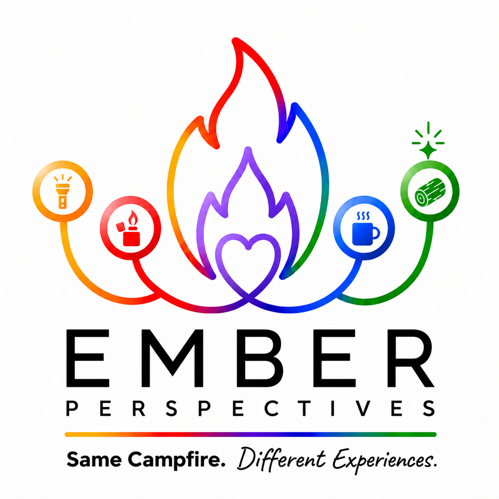

A symbolic framework that helps people understand what they naturally bring to shared human experiences (and why the same fire can feel completely different depending on who's around it and what's in the air).
Grounded in real research, translated for real life.
It is one person, not five separate people. Everyone carries all five dimensions. No one IS the flashlight. Everyone HAS a flashlight. It just looks different and runs on different batteries.
What makes Ember Perspectives different from every other personality or strengths framework: it doesn't just describe who people are. It describes the whole system they exist inside.
What people bring: all five, always. Everyone carries all five dimensions. They just look different and show up at different intensities.
The current state of those tools: where someone IS right now, not just who they are. The same tool can perform very differently depending on what condition it's in.
Context around the fire: which contributions are welcomed, suppressed, or safe. This is what most personality frameworks ignore entirely.
The five tools aren't a list. They're a cycle with a story. And the inner ember isn't a point in the sequence. It's the constant at the center.
Planning the trip. Lighting the path. And somewhere in that preparation, there's already a piece of wood (an idea, a vision of what this fire could be). Wood comes first as possibility, before it comes as fuel.
The lighter ignites it. When alone, the lighter can be the smoke signal (the thing that calls others toward the fire before they even knew they were looking for warmth).
Not a point in the sequence. The constant underneath the story. Present at every stage. It was there before the flashlight turned on. It will be there after everyone leaves. It never stops.
You can drink from your own mug alone. But the mug was made for the moment when someone else holds one too.
Wood appears twice: once at the beginning as possibility, once at the end as continuation. Beginning and end. The thing that makes the fire worth starting AND the thing that keeps it worth staying at.
Built on the Big Five (OCEAN), one of the most rigorously validated personality models in psychological research. Unlike Myers-Briggs (which lacks scientific validity and forces binary types), the Big Five is continuously validated, cross-culturally replicated, and dimensional rather than categorical.
The framework's design challenge: taking something rigorously validated and making it emotionally intuitive, conversationally usable, and humanly recognizable, without losing the integrity of the underlying model. That's what the campfire metaphor accomplishes. The symbols aren't decorative. They are carefully chosen to map onto what the research actually shows about each dimension.
When producing Ember Perspectives content: claims about human behavior should be grounded in what research actually supports. Reference the evidence naturally: "research shows," not "(Smith, 2003)." If something is speculative, flag it as such rather than presenting it as established.
One of the most immediately usable things the framework offers. The same dimension expressed in clinical language versus campfire language lands completely differently.
What we all bring to the fire. All different. All valuable. All around the same campfire.